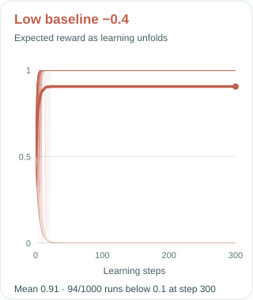
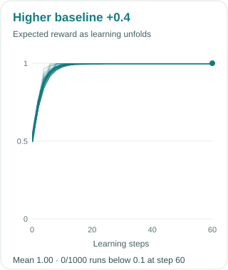

Imagine an agent learning to press one of two buttons. The blue button gives it a treat every time; the red button gives it nothing. The agent does not know this yet. It has to try buttons and gradually adjust its chances of pressing each one.
A policy-gradient learner updates itself using the reward from the button it pressed, compared with a reference point called a baseline. The signal is simply reward minus baseline. Baselines are usually introduced as a way to make these updates less noisy. That story is true, but it misses what happens along one particular learning journey.
Two reference points, two reactions
Blue pays 1; red pays 0. After a red press, a low baseline gives red a positive signal (0 − (−0.4) = +0.4). A higher baseline gives red a negative one (0 − 0.4 = −0.4). What does that mean over a whole learning run, when each next press comes from the policy the agent has learned so far?


With the low baseline, even a disappointing red press gets reinforced. If the agent happens to press red a few times early on, red becomes more likely each time. Blue becomes rarer, so the agent gets fewer chances to discover that blue was better all along. Its own decisions determine what evidence it will see next.
With the higher baseline, a red press moves the agent away from red. It leaves the door open for more blue presses. The difference is less about one update than about the feedback loop: try a button, change the policy, then collect the next experience using that changed policy.
But isn't the average update the same?
Yes. At a fixed policy, subtracting either baseline leaves the expected policy gradient unchanged. Averaged over possible button presses, both point toward blue. But a learner lives through one sequence of presses, not the average of every possible sequence. An unlucky early streak can make the better button so unlikely that the corrective evidence almost never arrives.
In our ICML 2021 paper, we call quick reinforcement of the sampled action committal behaviour. A less committal update keeps alternatives in play for longer. That is why the baseline is tied to exploration and exploitation: it affects how quickly the learner acts as though its early experience has settled the question.
Why variance alone does not settle it
The two-button story is only the beginning. Give the agent three choices: blue pays 1, orange pays 0.7, and gray pays 0. Now the baseline that minimizes the variance of a natural-gradient update can still reinforce orange. A higher baseline between 0.7 and 1 pushes away from orange and lets blue win.
Watch one learning run
Each point is a policy: the closer it is to a corner, the more often it chooses that arm. Both begin in the center and sample each next action from their own current probabilities.
How do we derive the minimum-variance baseline?
For arm i, write its reward as ri, its current probability as πi, and its natural-gradient direction as xi. The sampled update is Gi(b) = (ri − b) xi.
The expected update does not depend on b, because Σi πixi = 0. So minimizing its variance means minimizing the part that does depend on the baseline:
Differentiate with respect to b and set the result to zero:
For the three-arm softmax policy, the minimum-norm natural-gradient direction has ‖xi‖2 = 2 / (3πi2). The common factors cancel:
At the uniform starting policy, b* ≈ 0.57. An orange reward of 0.7 then gives a positive signal, about +0.13, and reinforces orange. With the fixed gap baseline 0.85, the same reward gives −0.15 and discourages orange. The first choice reduces variance at the current policy; it does not guarantee a better sequence of future choices.
This is not a rule to always choose a larger baseline. A learner that never commits has its own problems, and the precise results depend on the algorithm and setting. The useful shift in perspective is to ask what a baseline makes the agent do after each experience, and how that changes the experiences available later.
Our NeurIPS 2022 follow-up develops the story further, including why the value function is a particularly useful reference point under its assumptions. The broad lesson remains simple: in learning from your own actions, a baseline can change more than the noise. It can change when you decide you have seen enough.